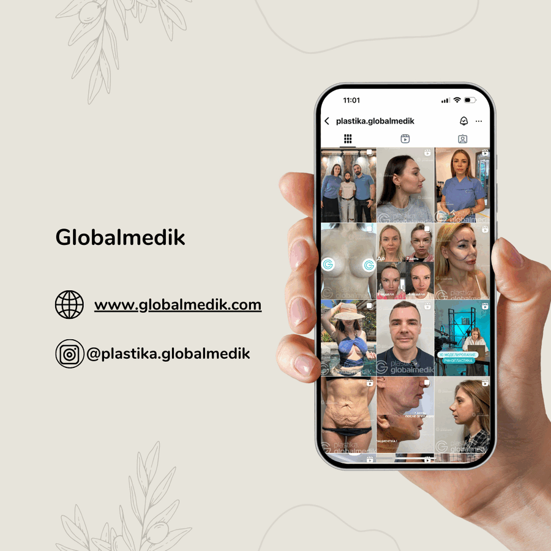

Разложили путь пациента
Определили вопросы и сомнения на каждом этапе: от поиска симптомов и процедур до выбора клиники и разговора с координатором.
Маркетинг для международной медицинской компании: стратегия, performance, YouTube и контент для рынка, где доверие важнее громких обещаний.
Медицинский туризм — длинный путь до заявки. Клиенту нужно понять, кому он доверяет здоровье и деньги.
Поэтому мы работали не с отдельными рекламными кабинетами, а со всей цепочкой принятия решения.

GLOBALMEDIK — сервис медицинского туризма в Турции, который сопровождает иностранных пациентов: от выбора клиники и врача до лечения и возвращения домой.
Помочь иностранным пациентам понять услуги, довериться команде и обратиться за консультацией через поиск, сайт и контент.
С января 2023 · продолжаем работу
Медицинский туризм · международная аудитория · работа более года
У GLOBALMEDIK был сильный продукт, но коммуникация должна была одновременно отвечать на вопросы пациента, выдерживать рекламные ограничения и приводить обращения, с которыми отдел продаж действительно может работать.
Нужно было соединить платный спрос, экспертный контент и понятный путь от первого касания до заявки — без ощущения агрессивной рекламы и без обещаний, которые нельзя подтвердить.
В медицине выигрывает не тот, кто громче. Выигрывает тот, кому верят.Решение Digital Clever
Определили вопросы и сомнения на каждом этапе: от поиска симптомов и процедур до выбора клиники и разговора с координатором.
Соединили Meta и Google, разделили горячий спрос и прогрев, настроили понятную аналитику и постоянную оптимизацию.
YouTube и полезные материалы стали отвечать на сложные вопросы до заявки и усиливать органическое доверие к бренду.
Смотрели не только на стоимость лида, но и на его реальную ценность для бизнеса: запрос, готовность, соответствие услуге.

Когда каналы работают в одной системе, маркетинг перестаёт быть лотереей и начинает помогать продажам.
Система продолжает развиваться вместе с задачами бизнеса.
Показываем, что происходит после клика: какие обращения пришли и где теряется качество.
Сложные медицинские темы переводим в спокойный, понятный и убедительный контент.
Предлагаем следующие гипотезы сами — от новых связок до контента и SEO.
Расскажите, какую услугу и на каком рынке вы развиваете. В течение 24 часов отправим предварительное предложение по системе работы.
Обсудить проектРасскажите о бизнесе и цели. Ответим в течение 24 часов.